エクスプローラーモード - 訪問サンプル¶
エクスプローラー モードを使用して、実際の訪問者の視点からウェブサイトを訪問したときの体験をシミュレートします。プリセットを選択すると、対応するプリセットで指定された重要なビジネスターゲットグループの1つに合わせて、訪問中にウェブサイトのルック＆フィールが調整されます。訪問をシミュレートするには、2つの方法があります。
固定訪問では、訪問者がウェブサイトをナビゲートすると、すべてのプロファイル値が自動的に選択されたプリセットで指定された値にリセットされます。固定訪問では、ウェブサイトの各ページは、訪問者が最初のページとしてそのページに直接アクセスしたか、プロフィールを固定したままにしているかのように表示されます。 つまり、訪問中にトリガーされた目標、キャンペーン、またはプロフィールの値は自動的にリセットされ、訪問中の値として蓄積されないということです。
ジャーニー訪問では、訪問者がウェブサイトをナビゲートすると、すべての値が蓄積され、これらの値が訪問者に追従するため、訪問が実際の旅をシミュレートします。 つまり、訪問中にトリガーされた目標、キャンペーン、またはプロファイルの値は、訪問者に自動的に関連付けられ、訪問中に蓄積されます。
プリセット¶
プリセットとは、目標、キャンペーン、プロフィールの値、または条件付きレンダリングなどの値が関連付けられたペルソナのことです。SBOSチームは、あなたのウェブサイトで使用するための適切なプリセットを開発するお手伝いをします。
この例では、プリセットを使用しています。
セシール - ファーストクラスを利用し、高水準のビジネス宿泊施設を期待する会社のCEO。
このシナリオでは、セシルがジェットストリームのウェブサイトの様々なページを訪れたときの体験をシミュレートしています。彼女がウェブサイトをナビゲートしながら、目標を達成したり、行動を変えたり、サイトの異なるページを訪れたりすることで、ウェブサイトが彼女の動きに合わせて変化していく様子を見ることができます。
このシナリオでは、固定訪問とジャーニー訪問の違いについても説明しています。
プリセットの選択¶
ウェブサイトへの訪問をシミュレートする前に、適切なプリセットを選択する必要があります。
エクスプローラーモードのプリセットを選択するには、以下の手順に従います。
エクスペリエンスエディタで、モードグループのExploreをクリックします。
[設定]パネルで[エクスペリエンス]セクションを展開し、関連するプリセット（例：Cecile）を選択します。
パネルの上部で、該当する探索モード（固定またはジャーニー）を選択します。
適用をクリックします。
ホームページ¶
ジェットストリームのウェブサイトでは、デフォルトのホームページにヴェネツィアの情報が表示されています。
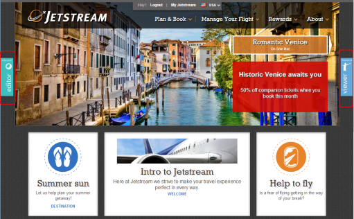{kind=link}
ビューア パネルの [ページ構成] セクションで、ヒーロー カルーセル スポットでは、パーソナライズ ルールが発動されていないことがわかります。
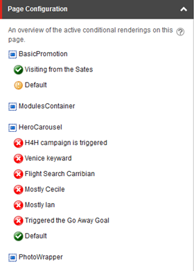セシールがウェブサイトを訪問した場合、ホームページにはパリの情報が表示されますが、これは主にセシールのパーソナライゼーションルールで指定されているためです。
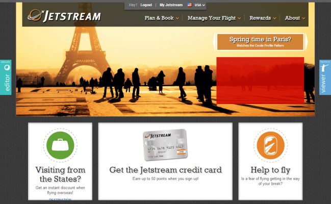{kind=link}
ビューアパネルのページ設定セクションで、固定とジャーニーの両方の訪問の場合、ヒーローカルーセルスポットでは、「Mostly Cecile」パーソナライゼーションルールが適用され、太字で緑色のアイコンが表示されていることがわかります。これは、セシールのプリセット値がこのパーソナライゼーションルール（Mostly Cecile）に指定された値と密接に一致しているためです。
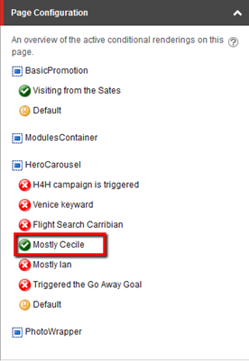目的地ページ¶
セシルは可能性のある目的地に興味を持ち、目的地のページに移動します。
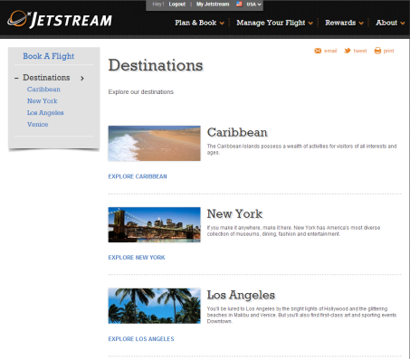{kind=link}
彼女はカリブ海の目的地をクリックします。
カリブ海は家族連れに人気のある休暇先であるため、イアンのプリセットのより家族向けのプロフィールにマッチしています。イアンは、オールインクルーシブで、家族で楽しめるアクティビティが充実していて、信頼できる託児施設がある休暇先を探している家族派の男性です。
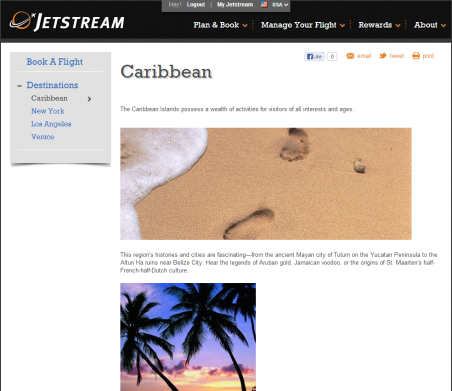{kind=link}
固定訪問では、セシルがカリブのページを訪問すると、セシルのイアンペルソナのプロフィールキーに20ポイントが加算されます。これは、イアンのペルソナが最も支配的になっているためです。
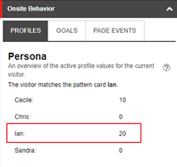この値は、彼女がこのページを閲覧したときにのみ表示されます - 彼女がページを離れると、セシルのプリセットの値は0にリセットされます。
ジャーニー訪問では、セシルがカリブ海のページを訪問すると、イアンのペルソナプロフィールキーに合わせてパーソナライズされ、値のポイントが保持されます。
ホームページに戻る¶
セシールはホームページに戻ります。
固定訪問では、すべての値が自動的にリセットされ、要求された各ページで選択されたプリセットと一致するため、固定訪問では、彼女はまだパリについてのフロントページを見ています。イアンのプロフィールに追加された20ポイントのプロフィール値はゼロにリセットされ、代わりにセシールのプリセットで指定されたプロフィール値が追加されます。
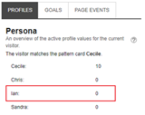 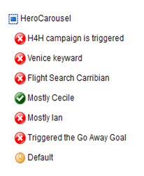{kind=link}
{kind=link}
ジャーニーの訪問では、セシルが家族旅行先を選択したため、ホームページがイアンのプロフィール用にパーソナライズされるようになりました。
セシールのプロフィールが10ポイントしかないのに対し、イアンのプロフィールは20ポイントを獲得しており、今回の訪問ではイアンのプロフィールが最も優位に立っています。このため、ホームページには、一般的な出張先ではなく、家族旅行の目的地に関する情報が表示されます。
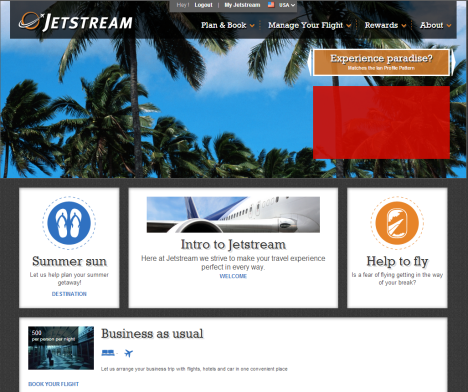 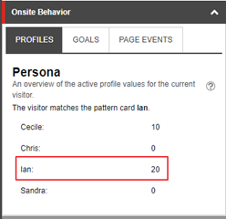 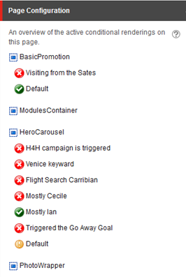{kind=link}
ヒーローカルーセルでは、適用されるパーソナライゼーションルールとしてMostly IanがMostly Cecileに置き換わっています。
プロファイルの変更¶
値やプロファイル特性を変更したい場合は、[設定] パネルで直接変更を行うことができます。適用] をクリックすると、現在の訪問の値が更新されます。
たとえば、イアンプロファイルキーの値をゼロまたは50に変更することができます。また、目標やイベントを選択して、目標やイベントがトリガーされた後のサイトの挙動を確認することもできます。
注釈
[適用] をクリックしても、実際にはプリセットに定義された値に変更は保存されません。恒久的な変更は、コンテンツ エディタでのみ可能です。 設定パネルで［リセット］をクリックすると、Exploreモードで使用されるプロファイル値やその他のxMarketingの値をプリセットの初期設定に戻すことができます。
ニュースレターのサインアップページ¶
セシルはジェットストリームのニュースレターに登録することにしました。彼女がフォームを送信すると、ジェットストリームニュースレターのサインアップフォームのゴールがトリガーされ、彼女の訪問に5つのエンゲージメントバリューポイントが追加されます。
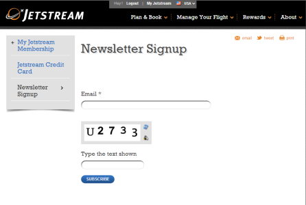 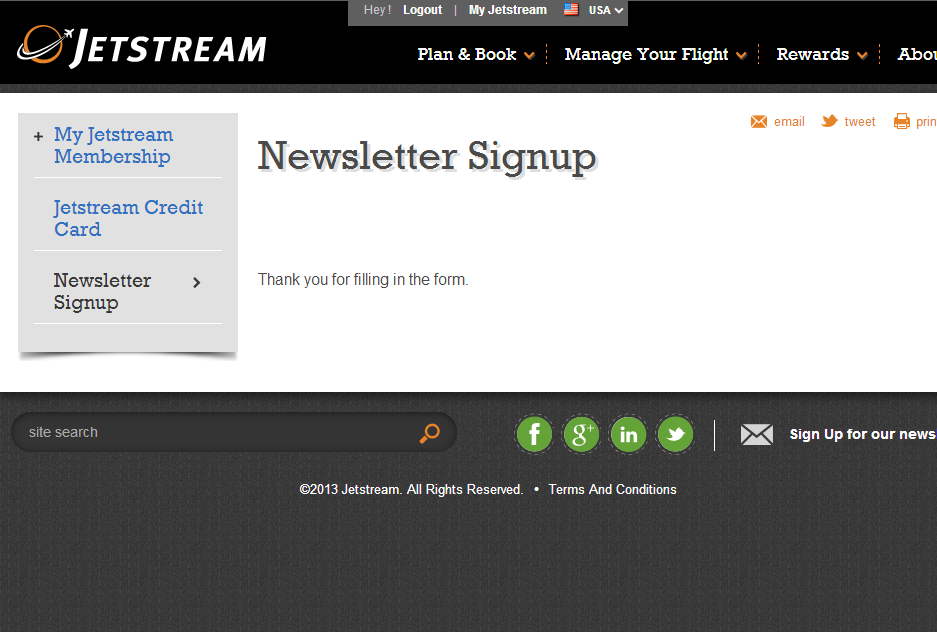{kind=link}
{kind=link}
固定訪問では、送信フォームボタンに適用されるゴールはトリガーされません。
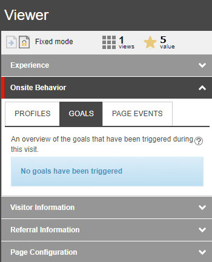{kind=link}
ジャーニー訪問では、オンサイト行動のセクションで、目標が登録され、セシルが5つのエンゲージメントバリューポイントを獲得していることがわかります。セシールのプリセットには、彼女がすでに達成しているいくつかの目標が設定されており、さらに70のエンゲージメント価値ポイントが付与されています。彼女がメルマガに登録した後は、合計75のエンゲージメントバリューポイントを獲得しています。
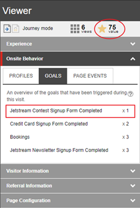検索¶
セシールは、コペンハーゲンからカリブ海のプンタカナへのフライトを検索することにしました。
固定訪問では、セシールが検索結果ページにいるとき、他のトリガーされたゴールは表示されません。セシールの検索では結果は出ませんが、彼女の検索ではフライト検索のゴールがトリガーされます。
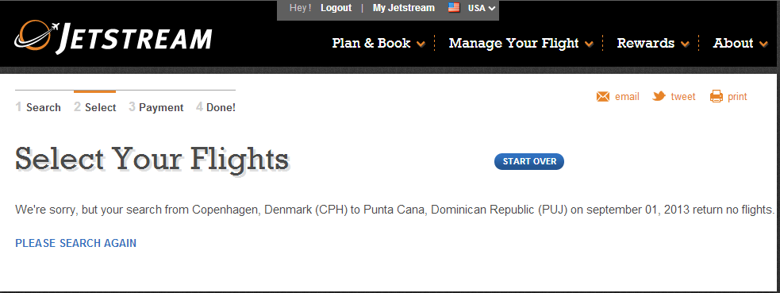 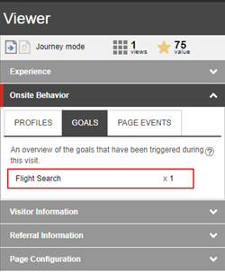{kind=link}
ジャーニーの訪問では、フライトサーチのゴールは、彼女のプロフィールにさらに10のエンゲージメントバリューポイントを追加します。
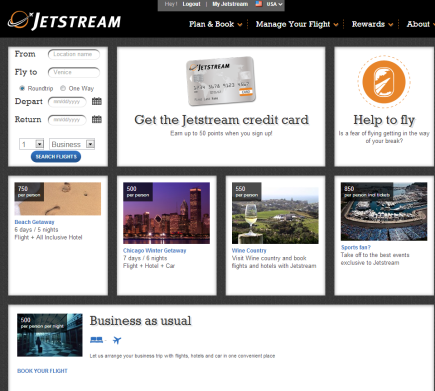 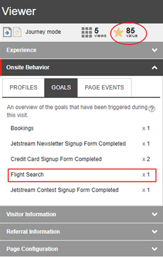{kind=link}
結果は見つかりませんでしたので、セシルは別のフライトを探すことにしました。この検索を行うと、さらに10のエンゲージメントポイントが加算されます。
{kind=link}
航空券の選択ページ¶
今回、彼女の検索では、いくつかのフライトが出てきます。彼女は適切なフライトを選択して予約します。このページでは、彼女は再びフライト検索のゴールを起動しました。
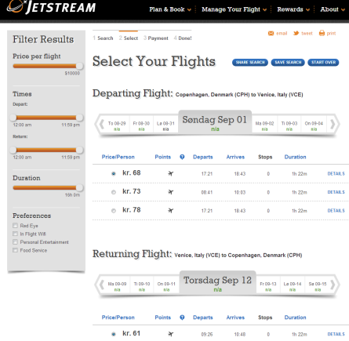{kind=link}
固定訪問では、他のトリガーとなるゴールは表示されません。
ジャーニー訪問では、フライトを予約することで70点のエンゲージメントバリューポイントが追加され、セシルのプロフィールは合計165点となります。
{kind=link}